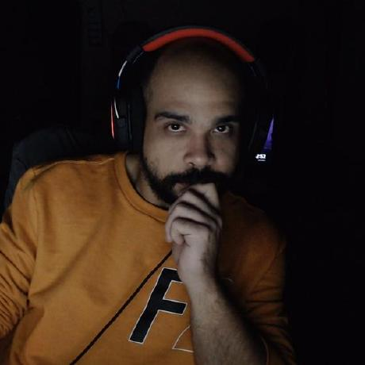
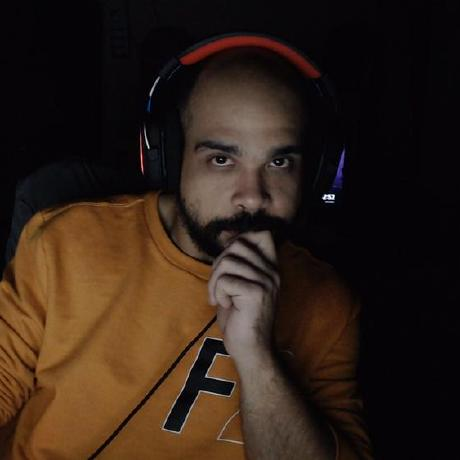

Quando fiquei sabendo que o Robert Pattinson seria o Batman, fiquei triste. Mas hoje ele é meu Batman
preferido. Depressivo, sem ficar fazendo pose, mas ao mesmo tempo imponente com o traje do Batman
Beatriz
A ideia de trazer o Batman mas para o lado detetive como nas hqs funciona de mais. Os personagens secundários
não são genéricos ou vazios, há muita química com todos. Temos um Batman cheio de personalidade e vigor, e
com falta ainda de experiência habilidades.

Paulo Luiz
O que decepciona um pouco é a falta de cenas de combates mais elaboradas, para muitos fãs se espera uma cena
de combate como o do batAfleck em BvS. Mas o filme acerta em praticamente tudo. Um dos melhores filmes até
agora do ano.
Carlos
Quando fiquei sabendo que o Robert Pattinson seria o Batman, fiquei triste. Mas hoje ele é meu Batman preferido. Depressivo, sem ficar fazendo pose, mas ao mesmo tempo imponente com o traje do Batman
Beatriz
A ideia de trazer o Batman mas para o lado detetive como nas hqs funciona de mais. Os personagens secundários não são genéricos ou vazios, há muita química com todos. Temos um Batman cheio de personalidade e vigor, e com falta ainda de experiência habilidades.
Paulo Luiz
O que decepciona um pouco é a falta de cenas de combates mais elaboradas, para muitos fãs se espera uma cena de combate como o do batAfleck em BvS. Mas o filme acerta em praticamente tudo. Um dos melhores filmes até agora do ano.